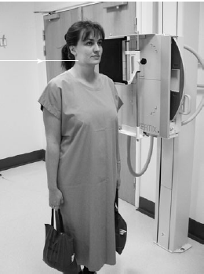

Cervical Spine(Lateral)
Centering point:Directed to the level of C4
Perpendicular to the IR
If the patient has torticollis, a wry neck, then direct the central ray to the inner, concave side to use the diverging rays to help penetrate the intervertebral joint spaces

Cassette Size:24cm x 30cm (10 x 12 ins)
Potrait
Exposure Factors:70kVp on
20MaS
FFD:150cm
Bucky/Grid:Moving or Stationary Grid
Filter:No
Collimation:Centre: C4
Shutter A: Open to include the top of the ear superiorly
Shutter B: Open to include the soft tissue of the neck anteriorly
The collimation may be angled to match the slope of the neck. For example, when the patient stands, C1 is usually more anterior than C7, so the collimation square may be tilted to match this slope.
Pathologies:Disruption to the 5 lines of stability, indicating possible fracture, arthritis
Position of patient and cassette
- Suspended respiration on expiration.
- The shoulders are able to relax downwards on expiration which will maximise the chances of being able to visualise the C7-T1 junction on the image.
In general-
Ensure the removal of artefacts that may superimpose the anatomy of interest
- If the patient is erect
- The patient is side on to the bucky/IR (usually left side is closest to the IR, however if the patient has torticollis, a wry neck, then direct the central ray to the inner, concave side)
- Position the midsagittal plane so that it is parallel to the IR
- Position the interpupillary line so that it is parallel to the IR (in an erect patient, this will also be parallel to the floor)
- Raise the chin slighlty, so that the line of the occlusal plane superimposes the base of the skull
- If the patient is supine
-
Position the patient so that the bucky/IR is along one side (usually the left side is closest to the IR)
- Position the midsagittal plane so that it is parallel to the IR. If the patient is on a barouche, then this is easily achieved by moving the bed.
- Position the interpupillary line so that it is perpendicular to the IR
- Only raise the chin slightly if the possibility of spinal injury has been ruled out, so that the mandible does not superimpose over the cervical spine
- Traction on arms may be required to see T1
- Where possible ask the patient to relax their shoulders down and move their finger tips in the direction of their toes on expiration, so that as you expose you have the best chance of penetrating the lower cervical spine area
Critique:
- Positioning
No rotation is evidenced by:-
he posterior vertebral bodies are superimposed
- The zygopophyseal joints are seen open
- Collimation
- Centre: C4
-
Shutter A: Open to show the EAMs superioly and the C7-T1 joint space and 1/3 of T1 inferiorly
- Shutter B: Open to show the soft tissue of the neck anteriorly, and the spinous processes of the cervical spine posteriorly
- Exposure
- Sufficient contrast and density to show the anterior soft tissue of the neck, including the airway.
- Minimal patient motion and sufficient contrast and density to show sharp, clear cortical margins and bony trabecular markings of the cervical vertebrae